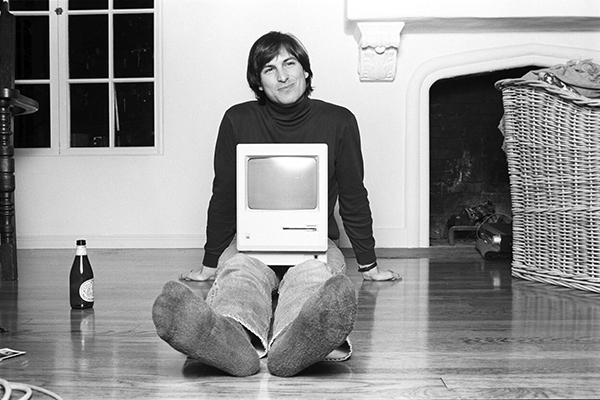

The creator of Apple industrious
Steve Jobs


The most ingenious men in the world
Steve Jobs, in full Steven Paul Jobs, (born February 24, 1955, San Francisco, California, U.S.—died October 5, 2011, Palo Alto, California), cofounder of Apple Computer, Inc. (now Apple Inc.), and a charismatic pioneer of the personal computer era.
Jobs was raised by adoptive parents in Cupertino, California, located in what is now known as Silicon Valley. Though he was interested in engineering, his passions of youth varied. He dropped out of Reed College, in Portland, Oregon, took a job at Atari Corporation as a video game designer in early 1974, and saved enough money for a pilgrimage to India to experience Buddhism.
Back in Silicon Valley in the autumn of 1974, Jobs reconnected with Stephen Wozniak, a former high school friend who was working for the Hewlett-Packard Company. When Wozniak told Jobs of his progress in designing his own computer logic board, Jobs suggested that they go into business together, which they did after Hewlett-Packard formally turned down Wozniak’s design in 1976. The Apple I, as they called the logic board, was built in the Jobses’ family garage with money they obtained by selling Jobs’s Volkswagen minibus and Wozniak’s programmable calculator.
In 2001 Jobs started reinventing Apple for the 21st century. That was the year that Apple introduced iTunes, a computer program for playing music and for converting music to the compact MP3 digital format commonly used in computers and other digital devices. Later the same year, Apple began selling the iPod, a portable MP3 player, which quickly became the market leader. In 2003 Apple began selling downloadable copies of major record company songs in MP3 format over the Internet. By 2006 more than one billion songs and videos had been sold through Apple’s online iTunes Store. In recognition of the growing shift in the company’s business, Jobs officially changed the name of the company to Apple Inc. on January 9, 2007.
In 2007 Jobs took the company into the telecommunications business with the introduction of the touch-screen iPhone, a mobile telephone with capabilities for playing MP3s and videos and for accessing the Internet. Later that year, Apple introduced the iPod Touch, a portable MP3 and gaming device that included built-in Wi-Fi and an iPhone-like touch screen. Bolstered by the use of the iTunes Store to sell Apple and third-party software, the iPhone and iPod Touch soon boasted more games than any other portable gaming system. Jobs announced in 2008 that future releases of the iPhone and iPod Touch would offer improved game functionality. In an ironic development, Apple, which had not supported game developers in its early years out of fear of its computers not being taken seriously as business machines, was now staking a claim to a greater role in the gaming business to go along with its move into telecommunications.
Steven Jobs spent his childhood in Silicon Valley. He was the type of child who liked to stick to himself. He only did competitive swimming, and no team sports.
He attended Crittenden Middle School, but the area that the school is in is a poor area where kids were bullied.
While in high school Jobs attended lectures at the Hewlett-Packard plant. On one occasion he boldly asked William Hewlett (1931–2001), the president, for some parts he needed to complete a class project. Hewlett was so impressed he gave Jobs the parts, and offered him a summer internship at Hewlett-Packard.
In 2003 Jobs was diagnosed with a rare form of pancreatic cancer, and the following year he underwent a major reconstructive surgery known as the Whipple operation. In 2009 Jobs received a liver transplant. In August 2011 he resigned as CEO of Apple, and two months later, at age 56, he died.